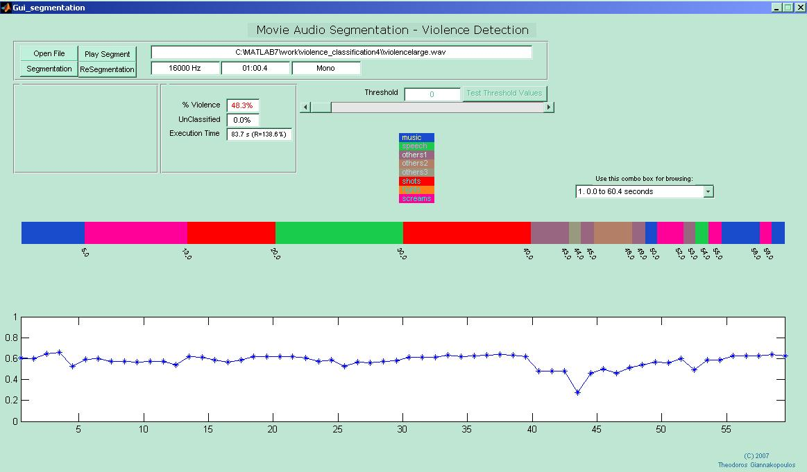
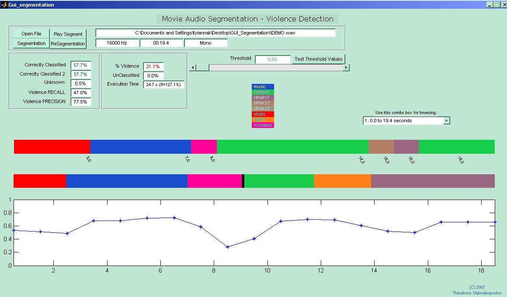

| Theodoros Giannakopoulos: Personal Web Page SOFTWARE / MULTI-CLASS AUDIO SEGMENTATION TOOL |
Installation: Simply run the Gui_segmentation.exe you will find in the zipped folder. If you do not have Matlab v. 7.0.0 (R) installed on your Pc, you will have to download the Matlab Component Runtime installer from here .
Using the GUI: 1) Press Open File Button, in order to load a .wav file. 2) Press Segmentation Button and wait till the process is completed. 3) When the segmentation process is completed, the results are plotted in the figure in the middle of the GUI. Different colours represent segments with different class labels. There is a label in the top of this figure, that explains the labels (e.g. music is blue, etc). 4) If your audio stream is longer than 2 minutes, it is broken into sub-streams of 2 minutes. In that case, you can browse through different sub-streams using the combo box on the right of the GUI. Also, you can listen to each segment by clicking on th Play Segment Button and then selecting the segment you want, using the mouse. 5) Bellow the figure in which the segmentation results are plotted, there is another figure in which the probability of the winner class of each segment is plotted. Higher values of that probability mean more certainty for the classification decision. The DEMO gives you the ability to use a threshold on that probability: using the Threshold slider, you can increase the threshold value. Then, by pressing the "Resegmentation" button, the segments that have a lower classification probability than the required threshold, are left unclassified.  6) ERROR COMPUTATION: When the .wav file is loaded, the program looks for a .mat file named [wavFileName]_labels.mat that has the true class labels for the specific wav file, stored in an array. If this file is found, then after the segmentation process, some performance measures are also calculated (see 2nd figure). If you want to generate such annotation files, you can use the Manual Audio Annotation Tool. In figue 2, a screenshot is presented when the loaded .wav file has been manually annotated and the labels file is found. In that case, another figure is shown, below the segmentation results figure. This second figure has the TRUE LABELS, as defined in the manual annotation stage. Also, the overall performance is calculated (here is 57.7%). Furthermore, as described above, if we change the threshold value and press "Resegmentation" the performance will probably increase, but some segments (those with a low classification probability) will be left unclassified. Finally, if you press the "Test Threshold Values" button (which is now enabled), a figure will be shown which will plot the segmentation performance, for different threshold values.  For any problems with the demo or ideas - suggestions please contact me at tyiannak@di.uoa.gr.
|